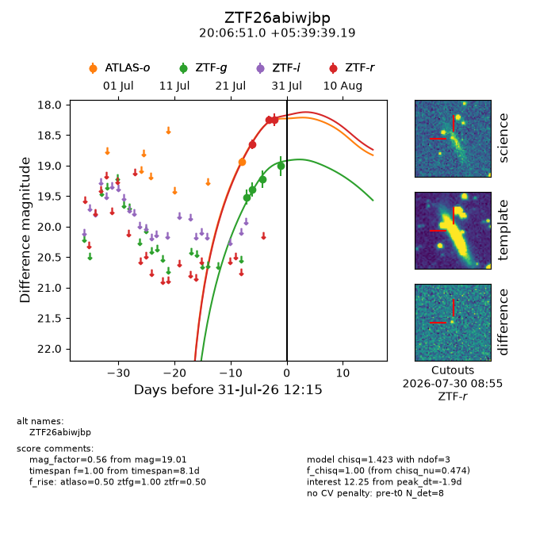
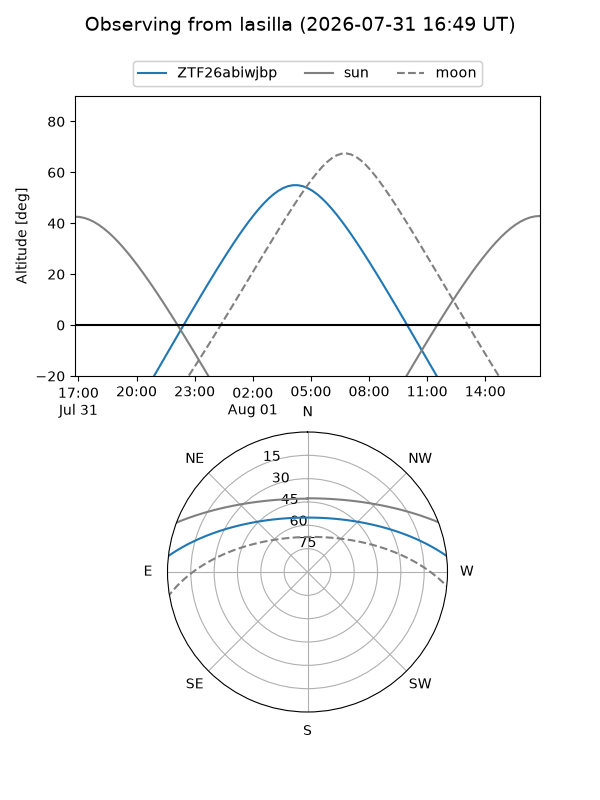
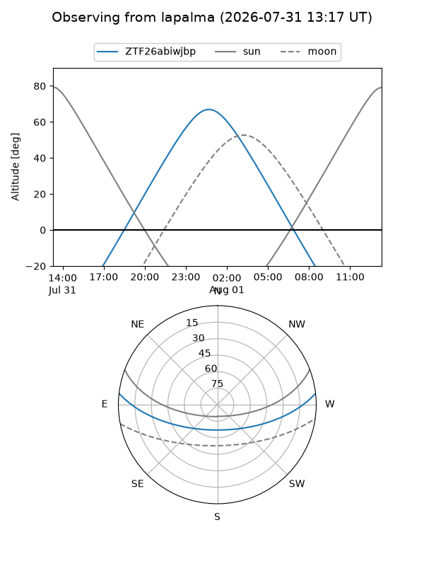
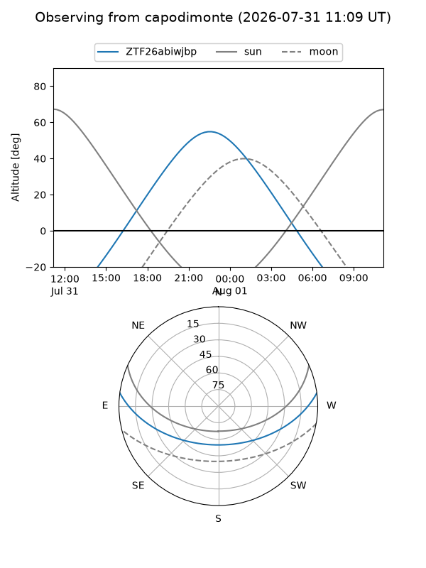
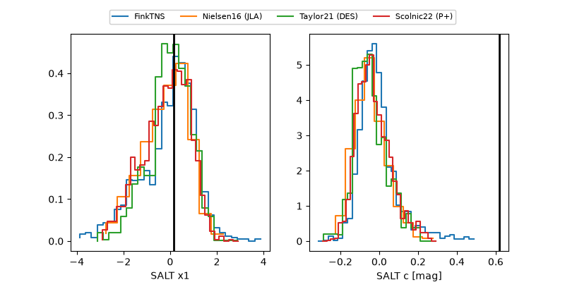

ZTF26abiwjbp
Target ZTF26abiwjbp at 2026-07-31 12:17
Aliases and brokers:
FINK-ZTF: ztf.fink-portal.org/ZTF26abiwjbp
Lasair-ZTF: lasair-ztf.lsst.ac.uk/objects/ZTF26abiwjbp
ALeRCE-ZTF: alerce.online/object/ZTF26abiwjbp
Direct TNS query: direct search
alt names
ZTF26abiwjbp (ztf,fink_ztf)
Coordinates:
equatorial (ra, dec) = 301.7124,+5.66089
equatorial (HMS+DMS) = 20:06:50.99,+05:39:39.19
galactic (l, b) = (46.9099,-13.95799)
Flags:
peak dt: -1.9
Photometry:
last atlaso=18.93, ztfg=19.01, ztfr=18.25
1 atlaso, 4 ztfg, 3 ztfr detections
Lightcurve

Visibility



Additional plots
